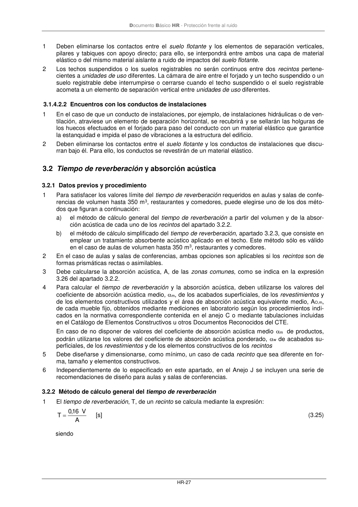

DB-HR · Página 33 · versión 2019-12-20
SHA256: a67baeca5138bb1f121f797d23a79a4557bd9ac4abacd954024893e05411eeab · página física 33 de 80 · métodos de encabezado
solo si están cotejados.
Formatos: Markdown · JSON de bloques · PDF p. 33 · imagen PNG
Documento Básico HR - Protección frente al ruido
HR-27
1
Deben eliminarse los contactos entre el suelo flotante y los elementos de separación verticales,
pilares y tabiques con apoyo directo; para ello, se interpondrá entre ambos una capa de material
elástico o del mismo material aislante a ruido de impactos del suelo flotante.
2
Los techos suspendidos o los suelos registrables no serán continuos entre dos recintos pertene-
cientes a unidades de uso diferentes. La cámara de aire entre el forjado y un techo suspendido o un
suelo registrable debe interrumpirse o cerrarse cuando el techo suspendido o el suelo registrable
acometa a un elemento de separación vertical entre unidades de uso diferentes.
3.1.4.2.2 Encuentros con los conductos de instalaciones
1
En el caso de que un conducto de instalaciones, por ejemplo, de instalaciones hidráulicas o de ven-
tilación, atraviese un elemento de separación horizontal, se recubrirá y se sellarán las holguras de
los huecos efectuados en el forjado para paso del conducto con un material elástico que garantice
la estanquidad e impida el paso de vibraciones a la estructura del edificio.
2
Deben eliminarse los contactos entre el suelo flotante y los conductos de instalaciones que discu-
rran bajo él. Para ello, los conductos se revestirán de un material elástico.
3.2 Tiempo de reverberación y absorción acústica
3.2.1 Datos previos y procedimiento
1
Para satisfacer los valores límite del tiempo de reverberación requeridos en aulas y salas de confe-
rencias de volumen hasta 350 m3, restaurantes y comedores, puede elegirse uno de los dos méto-
dos que figuran a continuación:
a)
el método de cálculo general del tiempo de reverberación a partir del volumen y de la absor-
ción acústica de cada uno de los recintos del apartado 3.2.2.
b)
el método de cálculo simplificado del tiempo de reverberación, apartado 3.2.3, que consiste en
emplear un tratamiento absorbente acústico aplicado en el techo. Este método sólo es válido
en el caso de aulas de volumen hasta 350 m3, restaurantes y comedores.
2
En el caso de aulas y salas de conferencias, ambas opciones son aplicables si los recintos son de
formas prismáticas rectas o asimilables.
3
Debe calcularse la absorción acústica, A, de las zonas comunes, como se indica en la expresión
3.26 del apartado 3.2.2.
4
Para calcular el tiempo de reverberación y la absorción acústica, deben utilizarse los valores del
coeficiente de absorción acústica medio, m, de los acabados superficiales, de los revestimientos y
de los elementos constructivos utilizados y el área de absorción acústica equivalente medio, AO,m,
de cada mueble fijo, obtenidos mediante mediciones en laboratorio según los procedimientos indi-
cados en la normativa correspondiente contenida en el anejo C o mediante tabulaciones incluidas
en el Catálogo de Elementos Constructivos u otros Documentos Reconocidos del CTE.
En caso de no disponer de valores del coeficiente de absorción acústica medio m de productos,
podrán utilizarse los valores del coeficiente de absorción acústica ponderado, w de acabados su-
perficiales, de los revestimientos y de los elementos constructivos de los recintos
5
Debe diseñarse y dimensionarse, como mínimo, un caso de cada recinto que sea diferente en for-
ma, tamaño y elementos constructivos.
6
Independientemente de lo especificado en este apartado, en el Anejo J se incluyen una serie de
recomendaciones de diseño para aulas y salas de conferencias.
3.2.2 Método de cálculo general del tiempo de reverberación
1
El tiempo de reverberación, T, de un recinto se calcula mediante la expresión:
A
V
16
,0
T =
[s]
(3.25)
siendo
